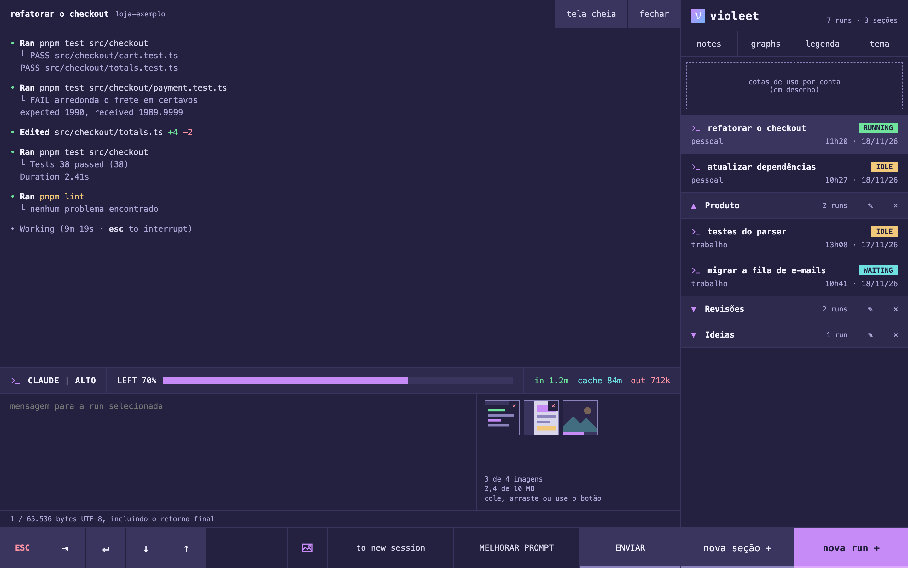
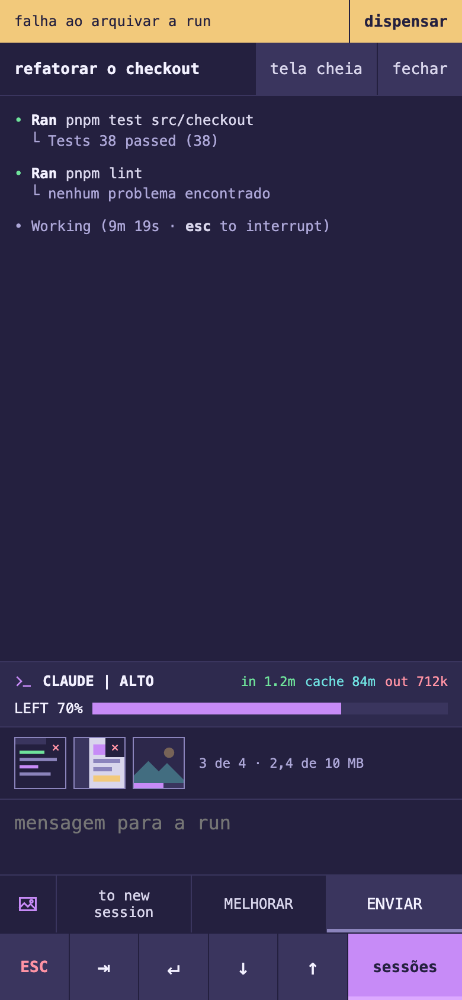
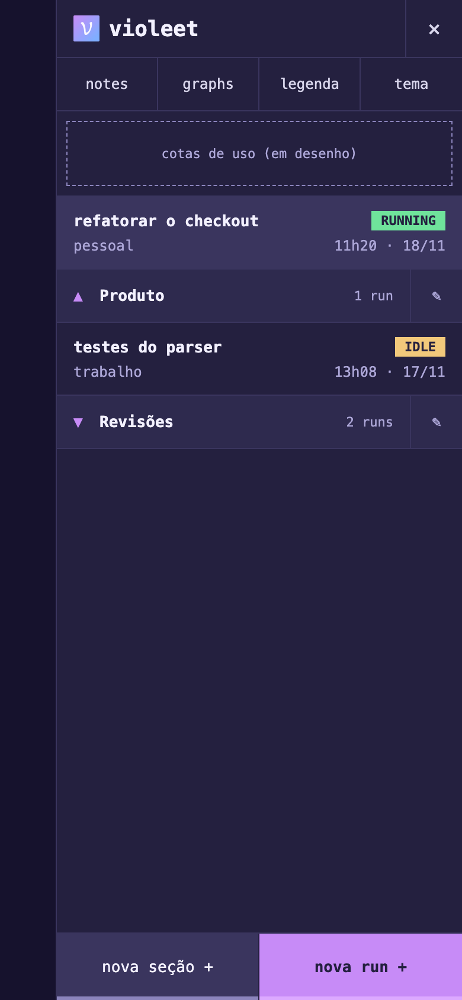
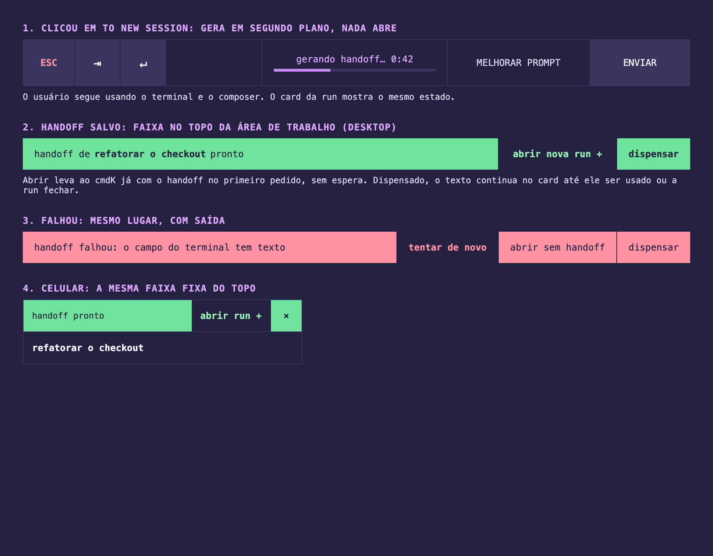

O que é
Um painel para quem roda mais de um agente por vez
Com três ou quatro agentes trabalhando ao mesmo tempo, o difícil deixa de ser o código: é saber qual sessão está esperando você, qual está perto de estourar o contexto e o que cada uma já fez. O violeet junta tudo isso numa tela só, sem esconder o terminal.
Lado a lado
Sessões de Claude Code, Codex e Cursor convivem na mesma lista, cada uma com o próprio estado.
No navegador
Nada para instalar no cliente: abre no navegador do desktop e funciona no celular.
Terminal de verdade
O agente roda num terminal real. O violeet acompanha, não substitui.
O que já existe
A base já roda no dia a dia
Antes do redesign, a base funcional já está de pé e é usada todos os dias por quem está construindo o violeet.
Runs em terminais de verdade
Cada run é um terminal no navegador, com o agente rodando como rodaria na sua máquina.
Seções para agrupar runs
Organize as runs por projeto, por tipo de trabalho ou do jeito que fizer sentido.
Lançador com texto livre
Abra uma run escrevendo o pedido, anexando imagens e usando o melhorar prompt antes de enviar.
Dados da sessão por run
Modelo, contexto restante e tokens de entrada, cache e saída, em cada run.
Notas e gráficos de uso
Anotações por sessão e gráficos para entender como o uso se distribui.
Uso pelo celular
Acompanhe e responda às runs pelo celular, com teclas de atalho na tela.
A interface do redesign
Como o violeet deve ficar
Mockups do redesign: o terminal no centro, a barra com os dados da sessão logo acima do composer e as runs agrupadas em seções na lateral.




Os mockups usam dados fictícios.
Roadmap
Para onde o violeet vai
Os marcos do redesign e as fatias de cada um, com o estado atual.
Carregando o roadmap…